1)
Consider as retas
Resposta:
(a)
Os vetores diretores da retas são colineares
(4,0,-2)=-2(-2,0,1). Portanto, as retas ou são iguais
ou são paralelas (diferentes). Para decidir é suficiente ver se
o ponto
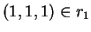
está em r2, isto é, se é
possível achar t tal que
(b)
Como as retas são paralelas a distância d de r1 a r2
é a distância de qualquer ponto de r2 a r1.
Escolhemos os pontos
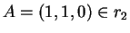
e
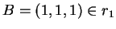.
Se N é o ponto de r1 mais próximo de A teremos
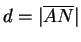
e
Observe que v. pode verificar que seus cálculos estão certos: o vetor 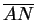 deve ser perpendicular ao vetor diretor das retas (como pode ser verificado calculando o produto escalar, que é zero).
(c)
Como as retas são paralelas vale qualquer ponto de r1(veja o comentário no início da resposta do item (b).
(d)
Sejam
B=(1,1,1),
C=(5,1,-1) (pontos de r1) e
.
A área do paralelogramo procurado é o módulo
do produto vetorial
Observe que v. pode verificar este resultado. A área será
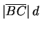
(d é a distância no item anterior),
pois a distância entre as retas é a
altura do paralelogramo. Como
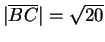
e
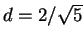
temos
(e)
Observe que se D é o novo
vértice temos
(f)
Um é o vetor diretor das retas,
u=(2,0,-1) e outro (por exemplo) o vetor
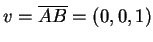.
(g)
O vetor normal ao plano é
(h) A equação cartesiana é
0x+1y+0z=d onde d é obtido pela
condição 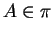,
ou seja y=1.
As equações paramétricas são (usando os vetores do item
(f)) e o ponto A=(1,1,0),
2)
Considere a reta r dada pelas equações
Resposta:
(a)
O vetor diretor v de r é obtido como o produto vetorial
dos vetores normais dos planos. Ou seja,
Outra forma seria resolver o sistema,
restando a segunda da primeira equação temos
(b)
Se v. não resolveu o item (a) pelo segundo método é suficiente
procurar um ponto do plano (por exemplo (1,0,0)) e
escrever
(c)
Considere um ponto da reta, por exemplo Q=(1,0,0), e observe
que

(d)
O módulo do vetor
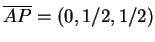
é a distância
procurada,
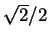.
Observe que há um modo de verificar que o resultado é coerente,
o vetor
 é ortogonal ao vetor diretor da reta
(faça o produto escalar e veja que é zero).
é ortogonal ao vetor diretor da reta
(faça o produto escalar e veja que é zero).
3) Considere os planos definidos abaixo:
a) Encontre um terceiro plano 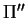
tal que
a interseção dos três planos 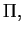
 e
seja um único ponto. (1.0 pts)
e
seja um único ponto. (1.0 pts)
b) Encontre um terceiro plano
(diferente de  e
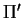)
tal que
a interseção dos três planos
e
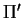)
tal que
a interseção dos três planos
 e
planos seja uma reta.
(1.0 pts)
e
planos seja uma reta.
(1.0 pts)
Resposta:
Para o item (a) é suficiente considerar um plano cujo vetor
normal não esteja no plano (vetorial) gerado pelos vetores normais
dos planos  e
.
Por exemplo
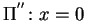.
e
.
Por exemplo
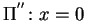.
Outra possibilidade é procurar um plano cujo vetor normal seja
a reta de interseção de  e
.
Este vetor normal é
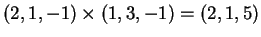.
Logo o plano procurado é (por exemplo) 2x+y+5z=0.
Deixamos para v. verificar que os três planos se intersetam em um ponto.
(resolva o sistema!)
e
.
Este vetor normal é
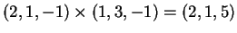.
Logo o plano procurado é (por exemplo) 2x+y+5z=0.
Deixamos para v. verificar que os três planos se intersetam em um ponto.
(resolva o sistema!)
Para o item (b) fazemos o seguinte. Observe que 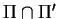é uma reta r (pois os planos não são paralelos). Se 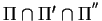 é uma reta essa reta é necessariamente r!. Portanto, 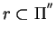. Então podemos escolher como 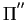 qualquer plano que contenha r e seja diferente dos outros dois planos.
Determinemos r. Seu vetor diretor já foi obtido
como o produto vetorial dos
vetores normais dos planos  e
,
(2,1,5).
Um ponto de r é
(0,-1,-2).
Logo
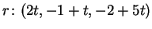,
e
,
(2,1,5).
Um ponto de r é
(0,-1,-2).
Logo
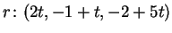,
 .
.
Para determinar devemos encontrar um ponto que não pertença aos outros planos. Por exemplo, P=(1,0,0). Então é suficiente considerar como o plano que contém a r e a P. O vetor nomal n do plano é perpendicular aos vetores diretores (2,1,5) e (1,1,2) do plano. Logo 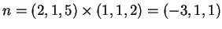. Logo 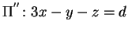 onde d é obtido por 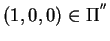, d=3.
Outra solução é procurar planos da forma